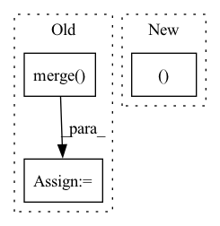

Pattern ID :36269

Before Change
lut_sat = np.clip(x * r[1], 0, 255).astype(dtype)
lut_val = np.clip(x * r[2], 0, 255).astype(dtype)
img_hsv = cv2.merge(
(cv2.LUT(hue, lut_hue), cv2.LUT(sat, lut_sat), cv2.LUT(val, lut_val))
).astype(dtype)
cv2.cvtColor(img_hsv, cv2.COLOR_HSV2BGR, dst=img) // no return needed
After Change
hsv_augs = hsv_augs.astype(dtype)
img_hsv[..., 0] = (img_hsv[..., 0] + hsv_augs[0]) % 180
img_hsv[..., 1] = np.clip(img_hsv[..., 1] + hsv_augs[1], 0, 255)
img_hsv[..., 2] = np.clip(img_hsv[..., 2] + hsv_augs[2], 0, 255)
cv2.cvtColor(img_hsv, cv2.COLOR_HSV2BGR, dst=img) // no return needed
In pattern: SUPERPATTERN
Frequency: 3
Non-data size: 3
Instances
Fragment ID: 102707978
Project Name: megvii-basedetection/yolox
Commit Name: a5f629a6d28fcc3742ce9483698b3376ce457533
Time: 2021-10-13
Author: 35716746+LGD-Ti-fighting@users.noreply.github.com
File Name: yolox/data/data_augment.py
M Class Name: AnonimousClass
N Class Name: AnonimousClass
M Method Name: augment_hsv(4)
N Method Name: augment_hsv(4)
M Parent Class:
N Parent Class:
M File Name: yolox/data/data_augment.py
N File Name: yolox/data/data_augment.py
M Start Line: 22
M End Line: 33
N Start Line: 22
N End Line: 30
'>
Before Change
last_df = last_df[["unique_id", "ds", "sample_mask"]]
mask_df = Y_df.merge(last_df, on=["unique_id", "ds"], how="left")
mask_df["sample_mask"] = mask_df["sample_mask"].fillna(1)
mask_df = mask_df[["unique_id", "ds", "sample_mask"]]
mask_df.sort_values(by=["unique_id", "ds"], inplace=True)
mask_df["available_mask"] = 1
After Change
mask_df_s = mask_df.sort_values(by=["unique_id", "ds"])
zero_idx = mask_df_s.groupby("unique_id").tail(ds_in_test).index
mask_df.loc[zero_idx, "sample_mask"] = 0
assert len(mask_df)==len(Y_df), \
f"The mask_df length {len(mask_df)} is not equal to Y_df length {len(Y_df)}"
'>
Fragment ID: 102707960
Project Name: nixtla/neuralforecast
Commit Name: cafcc1cb5944664ede8648900ffbf755cf344b09
Time: 2021-04-29
Author: fede.garza.ramirez@gmail.com
File Name: nixtla/data/tsdataset.py
M Class Name: AnonimousClass
N Class Name: AnonimousClass
M Method Name: get_default_mask_df(3)
N Method Name: get_default_mask_df(3)
M Parent Class:
N Parent Class:
M File Name: nixtla/data/tsdataset.py
N File Name: nixtla/data/tsdataset.py
M Start Line: 384
M End Line: 398
N Start Line: 384
N End Line: 390
'>
Before Change
y_df["unique_id"] = pd.Categorical(y_df["unique_id"], u_ids)
y_df = y_df[["unique_id", "ds", "y"]].sort_values(["unique_id", "ds"])
X_df = y_df[["unique_id", "ds"]].merge(X_df, how="left", on=["ds"])
S_df = None
if cache:
pd.to_pickle((y_df, X_df, S_df), file_cache)
After Change
y_df = pd.read_csv(f"{path}/{group}.csv")
y_df, X_df = process_multiple_ts(y_df)
S_df = None
if cache:
'>
Fragment ID: 102707971
Project Name: nixtla/neuralforecast
Commit Name: c2ddcb1801d9b7bacfe87f720f954c473ed93078
Time: 2021-11-03
Author: fede.garza.ramirez@gmail.com
File Name: nixtlats/data/datasets/ett.py
M Class Name: ETT
N Class Name: ETT
M Method Name: load(3)
N Method Name: load(3)
M Parent Class:
N Parent Class:
M File Name: nixtlats/data/datasets/ett.py
N File Name: nixtlats/data/datasets/ett.py
M Start Line: 86
M End Line: 104
N Start Line: 110
N End Line: 112